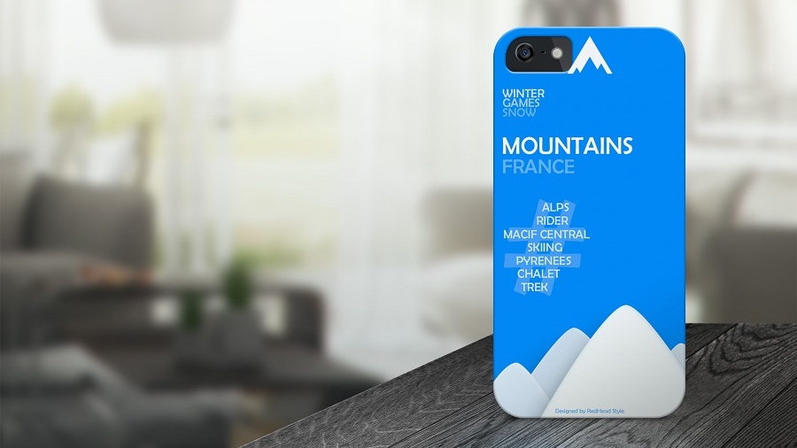

na
Welcome on my personal page
Welcome to my personal page. I'm Nicolas Augereau, based in Nantes, France, and I work as an automation engineer and QA tester.
About me
I have worked a lot for the retail industry and I became a consultant since the end of August 2013. I am specialized in QA Testing and test automation. I also create some designs and collaborate on some website creation projects or other more artistic domains.
Services
Need automation and testing expertise?
Automation testing
As an experienced automatician, I am a professional with a passion for designing and optimizing automated tests to ensure software quality. My specialization lies in the skilful use of modern testing frameworks such as Cypress, Playwright, Puppeteer, Jest, and many others. My expertise also extends to continuous integration and automated deployment pipelines, ensuring the delivery of high-quality software at optimum speed.
Cypress Automation Training
Cypress, the end-to-end testing framework for web applications. Learn how to automate your tests and ensure the quality of your developments thanks to this modern, high-performance technology.
Helping people with IT
Help companies adopt and implement development methodologies such as V-Cycle, Agile, Scrum and Kanban. Development and execution of test strategies, including the drafting of detailed test plans. Implementation of test automation frameworks and integration into CI/CD pipelines. Development of IoT solutions.
Design
Here are just a few examples of our creations over the last few years. Some were made for professional purposes, others for personal discovery.
Logo of a French company
Logo and website design for a landscaping friend.

Phone case
Design of a cell phone case.
Original tie
Creation of a personalized tie with the effigy of Paris.
Glass shoes
Complex design of a pair of women's shoes with the Blender 3D application.
Music
Here you'll find my latest music podcasts. I usually produce 1 podcast a month for Progressive music lovers, under the artist name Nēa Jabnē, hence the title ’NeJa Monthly Podcast’. I hope you will like !